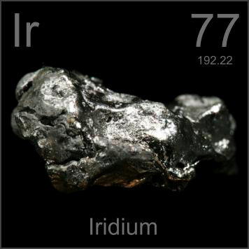

HOME
PREVIOUS
NEXT

Iridium
Atomic Weight: 192.217
Density: 22.56 g/cm3
Melting Point: 2466 °C
Boiling Point: 4428 °C
Iridium is extremely hard to melt: This lump only made it about half way to being melted, hence its odd shape. This property of iridium makes it useful in high-temperature situations, such as spark plug electrodes.